A non-linear feature in a tiny classifier
In this post I am going to walk through my approach for an AI puzzle challenge organized by BlueDot. The goal was to dissect a simple trained machine learning model and understand it. If you are new to technical AI safety, I think it is a good way to get your hands dirty and practice basics that could be useful for addressing larger models.
The challenge
I will report verbatim from the puzzle's text. The organizers trained a small classifier on short text inputs to predict eight binary features simultaneously, at over 95% accuracy on each:
numbercontains a digit or written-out number (3, seven, …)questionphrased as a question (ends in ?, or starts with who/what/why/…)colorcontains a color word (red, blue, …)foodmentions food (pizza, apple, soup, …)sentimenthas positive vs. negative sentimentcountrycontains a country name (Japan, France, USA, …)personcontains a person's name (Alice, Mark, …)body_partcontains a body-part word (hand, eye, …)
After a particular layer L of this model ($L=2$), seven of these features are represented linearly: a single direction in the activation space describes the feature. However, one feature is represented in a different way. Can you find and explain it?
Model architecture
The model consists of the sentence-transformers/all-MiniLM-L6-v2 text encoder followed by a mean pool to get a single 384-dimensional representation of that input. This is then fed through a 5 layer MLP with ReLUs between the layers. The resulting 8 logits are then fed through individual sigmoid functions to recover the predicted probabilities for the 8 features. The image below, from the puzzle's intro, gives a bird's-eye view of the architecture.

The 8 probabilities don't need to sum to 1 because the eight features aren't mutually exclusive. The model was trained with per-feature binary cross-entropy across the eight outputs.
The model in action
Just for reference, we can play a bit with the model by varying some input sentences:
Alice loves the red car she bought in Japan for two hundred dollars.
-> ['number', 'color', 'sentiment', 'country', 'person']
Did Sarah eat pizza with her hands in Italy?
-> ['question', 'food', 'sentiment', 'country', 'person', 'body_part']We can see that the model outputs multiple categories at the same time, so it is not a simple basic multi-classification. We can now go over the details of the challenge itself.
AI Disclaimer: I used Claude Code to write code and make plots. I suggested experiments, made hypotheses. But I also discussed things with AI models.
Task 1: Find the non-linear feature.
Identify which of the eight features is not represented linearly at the specified layer activations.
The feature I find is country.
This conclusion follows from a very simple approach, already explained in earlier work: each hidden layer of the model represents examples as vectors living in $\mathbf{R}^{64}$, a $d=64$ dimensional space. The model has many ways to use those degrees of freedom to represent the information relevant to some data point.
A feature is linear if it represents a line in this space, one degree of freedom. If $\vec{x}$ is your information at layer $L$, a direction $\vec{w}$ asks whether $\vec{w}\cdot \vec{x}-a > 0$ or not, where $a$ is a threshold. These are called linear probes.11 The linear-probe idea (train a simple classifier on a layer's activations and see how well it does) goes back to Alain & Bengio, "Understanding intermediate layers using linear classifier probes" (2016). As a mental image, think of laying every sentence out along a single number line according to how "positive" its sentiment is: positive sentences end up on the right, negative on the left, and one cutoff cleanly splits them. Not being able to do that is what gives us a non-linear feature.
If a feature is truly linear at some layer, then we should be able to classify it easily with a linear model; we train a linear probe per feature on the layer-2 activations. Our the expectation is that the probe should recover the direction of seven features cleanly, while struggling with the one that isn't linear. By training a logistic regression at layer 2 for each feature we discover that:
| Feature | Train Acc | Test Acc |
|---|---|---|
| number | 1.000 | 0.975 |
| question | 1.000 | 1.000 |
| color | 1.000 | 0.971 |
| food | 1.000 | 0.985 |
| sentiment | 1.000 | 0.982 |
| country | 0.469 | 0.428 |
| person | 1.000 | 0.998 |
| body_part | 1.000 | 0.980 |
Every feature except country hits a comfortable $\sim 97 \%$, while country lands around $43 \%$, worse than a coin flip!
Checking also other layers, just in case
A more thorough check is to do the same for every layer and every feature:
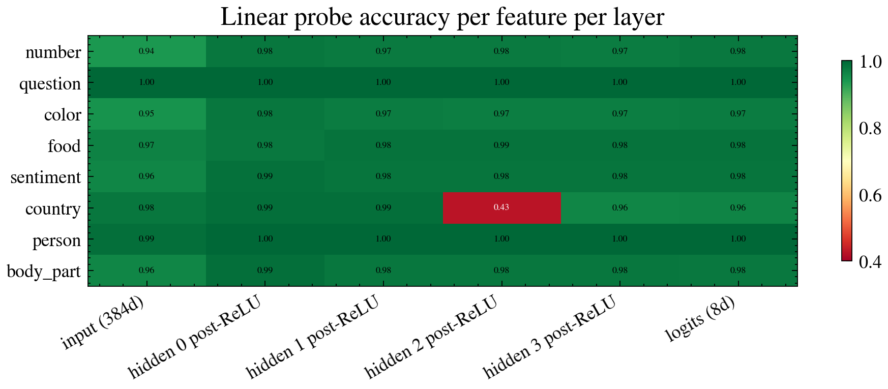
Linear-probe accuracy for every feature (rows) at each layer (columns) of the original network. Every feature is linearly decodable everywhere except country, which collapses to ~0.43 at layer 2.
Each concept is linearly separable already at the embedding! The sentence encoder knows about countries, and so does every layer, except layer 2, where country does something interesting. That is strange: with 64 dimensions per layer there should be plenty of room to park a linear direction for the feature.
I then retrained my own network with the same architecture and the same training data. Here is what I got (over four seeds; this is one of them):
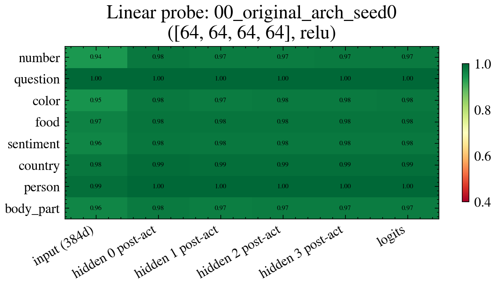
The same per-layer probe accuracies for a network I retrained from scratch with identical architecture and data. The layer-2 country dip is gone, so the band comes from the original training run, not the architecture.
This suggests something about the training procedure itself produces the effect. I'll park that for now and come back to it in Task 3.
Where is the dimension of the non-linear feature going?
Could it be leaking into other dimensions? Each per-feature linear probe gives us a direction, and we can compare those directions with cosine similarity:
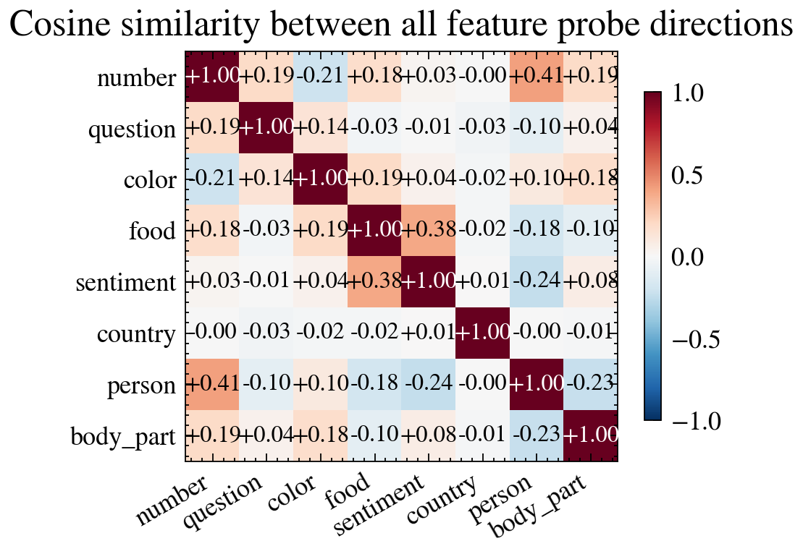
Cosine similarity between the eight per-feature linear-probe directions. The country row and column share almost nothing with the others.
The country direction shares very little with the others, while every other feature shares something with its neighbours (the most notable pairs are person/number, food/sentiment, person/body_part). If country had leaked into a non-linear space (meaning we no longer have one simple degree of freedom), where did it go?
To answer this question, let’s first check what happens if we employ a non-linear probe such as an MLP at layer = 2 to read country. And we ask ourselves how small can this MLP be. Varying the hidden size $h$ we show some accuracy scores on the test set on one-layer MLPs trained on the puzzle’s network layer=2 (ten runs each):
| h | Mean Test | Std | Min | Max | Individual runs |
|---|---|---|---|---|---|
| 1 | 0.563 | 0.106 | 0.457 | 0.723 | [0.50 0.50 0.50 0.50 0.50 0.72 0.49 0.46 0.72 0.72] |
| 2 | 0.719 | 0.211 | 0.399 | 0.951 | [0.95 0.50 0.95 0.72 0.40 0.52 0.72 0.52 0.95 0.95] |
| 3 | 0.816 | 0.177 | 0.508 | 0.951 | [0.95 0.95 0.51 0.95 0.51 0.95 0.72 0.95 0.72 0.95] |
| 4 | 0.793 | 0.203 | 0.495 | 0.952 | [0.95 0.50 0.95 0.95 0.95 0.49 0.50 0.95 0.72 0.95] |
| 5 | 0.838 | 0.185 | 0.485 | 0.958 | [0.72 0.95 0.96 0.96 0.48 0.50 0.95 0.95 0.95 0.95] |
| 6 | 0.858 | 0.187 | 0.465 | 0.959 | [0.96 0.95 0.95 0.95 0.50 0.46 0.95 0.95 0.95 0.95] |
| 8 | 0.955 | 0.005 | 0.949 | 0.965 | [0.96 0.95 0.95 0.95 0.96 0.95 0.96 0.96 0.95 0.95] |
| 16 | 0.957 | 0.004 | 0.950 | 0.964 | [0.96 0.96 0.96 0.96 0.96 0.96 0.96 0.95 0.95 0.96] |
We find that one neuron, $h=1$, is not enough; at $h=8$ there's a clear difference; and at $h=2$ we can already do something. When the optimization is lucky, an $h=2$ probe reaches up to 0.95 test accuracy. (interestingly, the individual runs also cluster suggestively around {0.5, 0.7, 0.95}, perhaps a hint of a two-boundary structure that we'll return to).
Focus on a successful $h=2$ probe (test accuracy > 0.9). It has two neurons, each defining a direction in the 64-dimensional space (the weight matrix has shape W = (64, 2)). Call the (normalized) directions $\hat{d}_1$ and $\hat{d}_2$, and project the activations from training data onto them:
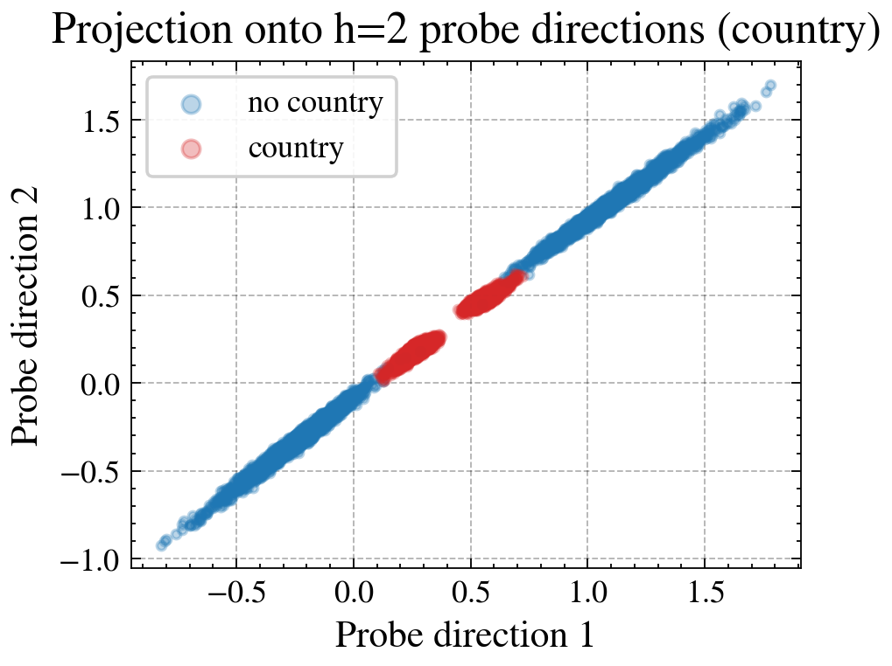
Layer-2 activations projected onto the two hidden-neuron directions of a successful h=2 MLP probe. Country (orange) sits in an internal corridor, with no-country points on either side.
A two-neuron MLP separates country by creating a kind of internal corridor. To simplify, we make an approximation: the angle between the two directions is roughly 30° (29.1°), so we can get a rough single direction $\hat{d}_{\parallel} = \frac{\hat{d}_1+\hat{d}_2}{2}$, the bisector, and a perpendicular direction $\hat{d}_{\perp}=\hat{d}_1-\hat{d}_2$ (note, by construction $\hat{d}_{\perp}\cdot \hat{d}_{\parallel}=0$).
Now we ask again how do activations project onto these directions?
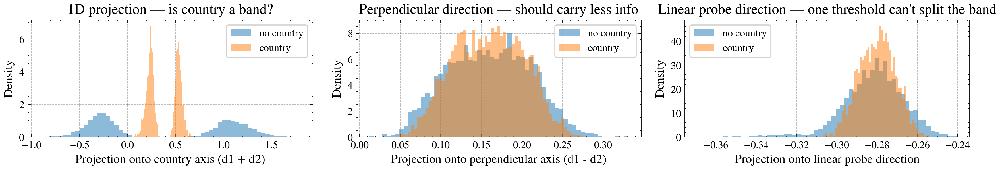
Projections onto the country axis (left), the perpendicular axis (middle), and what a single linear probe predicts (right). Country forms a bounded 1-D band; the perpendicular axis carries no country signal; one threshold cannot capture a band.
In this plot we show the activations at layer 2 projected onto a few directions, labelled by true label. We manage to see that the country feature lives in a ‘corridor’, or interval, roughly given by this average $\hat{d}_{\parallel}$ (this works because $\hat{d}_1$ and $\hat{d}_2$ are quite similar). It's a clean-ish 1-D bounded structure. On the other hand, along the perpendicular axis (and along the linear-probe direction) there is little distinction between text containing a country and text without one.
Now we can use a band rule:
Band rule (lower=0.050, upper=0.700):
Train acc: 0.996
Test acc: 0.947A linear probe predicts country = (proj > t) from a single cut. But the band rule predicts country = (lo < proj < hi) from two cuts. With two cuts we beat the linear probe easily, hence the strong accuracy.
But what are these sub-categories per country label?
Looking closely at the band, the country samples form two distinct sub-peaks. What explains the split? Let's cluster data based on projection value we read from the above plot (at around 0.4):
Left peak (proj < 0.4): n=1802
Right peak (proj >= 0.4): n=1649| Feature | Left peak | Right peak | Difference |
|---|---|---|---|
| number | 0.544 | 0.552 | +0.008 |
| question | 0.496 | 0.491 | -0.005 |
| color | 0.525 | 0.463 | -0.062 |
| food | 1.000 | 0.000 | -1.000 <<< |
| sentiment | 0.502 | 0.525 | +0.023 |
| country | 1.000 | 1.000 | +0.000 |
| person | 0.512 | 0.511 | -0.000 |
| body_part | 0.501 | 0.512 | +0.011 |
The split is explained by the food! Is the food-country entanglement real structure, or an artifact of the probe direction we found? Grouping the projections by country × food gives:
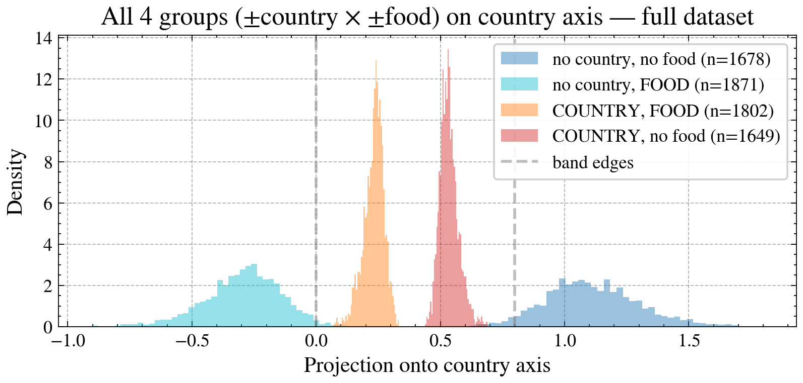
The country-axis projection split into the four country x food groups. The country band is itself cut cleanly in two by food.
For clarity, we also plot again the cosine similarity matrix by now including $\hat{d}_{\parallel}$ (named country_axis):
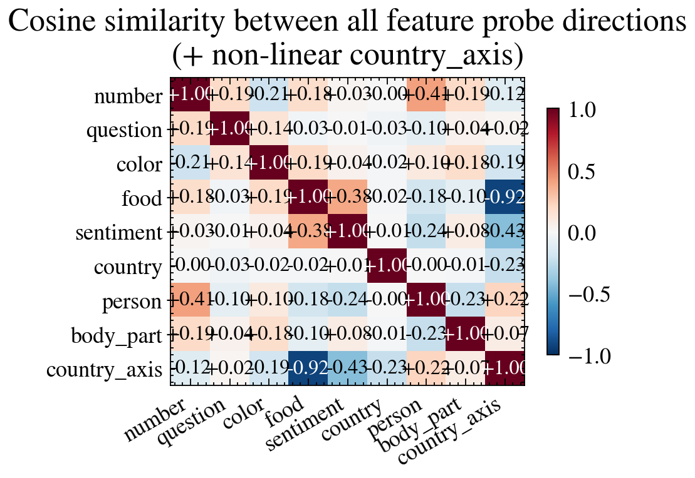
Cosine-similarity matrix with the non-linear country axis added as the last row/column. It is about -0.92 aligned with the food direction: country rides on the food axis.
Comparing the country column, that as a reminder represent the direction learnt by the linear probe at layer 2, with the country_axis one, we clearly see a clear (anti-) alignment with the food linear probe's direction. So the average direction from the $h=2$ probe points along the food linear-probe direction, just anti-correlated (cosine ≈ −0.9). We've confirmed that something genuinely interesting is going on.
Task 2: Explain how that feature is represented
Describe the geometric structure the model uses to represent this feature. Show the analysis you used to convince yourself.
Country is encoded as a 1D band (interval) on the food direction at layer 2. A single direction encodes a 4-state variable using position alone. The downstream layers can then read:
country= "is the projection inside a band, e.g. [0, 0.8]?" (non-linear, needs 2 ReLUs)food= "is the projection low or high?" (linear, needs only 1 threshold)
This is reminiscent of superposition: one feature (country) riding non-linearly on another feature's direction (food) instead of getting its own axis.22 Superposition (Elhage et al., Toy Models of Superposition) usually means a network packing more features than it has dimensions into shared, non-orthogonal directions. That pressure isn't really present here (8 features in 64 dims), which is why I say "reminiscent of" rather than claiming it outright. I want to be careful with the word, though. With 64 dimensions and only 8 features there is plenty of room for a separate linear country direction, so this is not a forced, dimension-saving compression, and a network I retrained from scratch (Task 1) does not reproduce the band. So the mechanism is clear, but why the original network does this, when it has the room not to, is not. It looks more like a quirk of this particular training than a necessity, something I push on in Task 3.
Much of the analysis in Task 1 was already in service of this conclusion. In trying to understand country we ended up understanding the geometry of the network. The band itself is the bounded orange interval along $\hat{d}_{\parallel}$ in the projection plot above.
Task 3: Train a model with an even weirder representation
Train your own model that encodes that feature (or some other feature) in a more interesting way than ours. "More interesting" is up to you to define and defend.
A 1D band sharing a direction with another feature in geometry space can be activated under decorrelation pressure.33 I did not spend much time on this task. The main item I focus on though was trying to reproduce the network of this puzzle, and tweaking around. I am sure I could have found more interesting shapes, but I was pretty happy about reproducing similar effects to the original network.
Earlier in the text we discussed about our inability to reproduce the original network with the most basic training procedure. The first thing that comes to mind is something going off with the training procedure. Perhaps in the optimizer? Or something else? (like number of iterations, or changing the architecture even if here it is fixed) My failure was robust to seed initialization for example. Hence, the puzzle's network was not trained by luck. We need to be a bit more deliberate.
One of the easiest ways is to apply pressure during training, for example by playing with the loss function. You had somehow to incentivize the network to park off some information in non-linear spaces. Because, with 64 dimensions there is no reason to be so nasty :) Unless something forced you.
At the time I remembered, from a journal club of a students group that I attended, this paper https://arxiv.org/pdf/2512.11949. In equation 1 they use what looks like a standard technique, as I would imagine, to just add some loss function to mess up with your network. In that paper case, you add something that accounts for linear probes, trying to obfuscate the network behaviour for some specific layer.
In the Appendix I explore a few ideas and give some details, so I will summarize the main results here.
Focusing on decorrelation method
In the end, I wented with a method called the decorrelation method. The idea came from Gemini. Decorrelation, my understanding, is that it will not allow a neuron's activation to correlate with the country label.
We modify the loss function as:
$$ \mathcal{L}_{\text{total}} = \mathcal{L}_{\text{task}} + \lambda \sum_{i=1}^{d} \frac{\text{Cov}(a_i, y_c)^2}{\text{Var}(a_i) \text{Var}(y_c)} $$
where $a_i$ is the $i$-th neuron's activation at the chosen layer and $y_c$ is the country label.
It will only attack linear, single-neuron correlation. No individual neuron activation should rise or fall on average with country (basically the correlation rho^2 term in that loss function).
Let’s pick $\lambda = 20$. First, we see from the linear probe accuracy table that we can get the following:
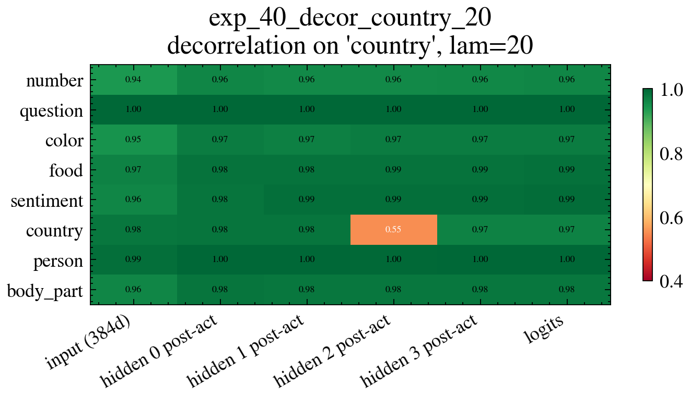
Per-layer linear-probe accuracy for a model trained with the decorrelation penalty on country (lambda=20). The layer-2 country dip reappears, reproducing the original puzzle's non-linear band.
Then, we can directly go over a PCA, instead of playing with MLPs:
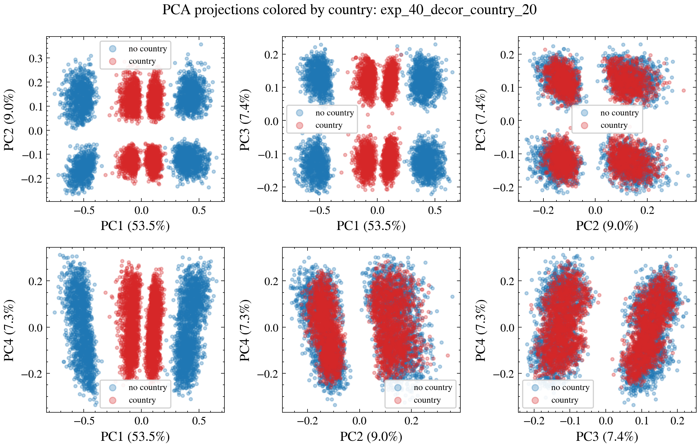
PCA of the decorrelation model's layer-2 activations, colored by country across pairs of principal components.
Pretty interesting results!!
But wait a minute. Here we now have 8 lobs for PC axes. In particular, now we have 8 blobs! What are these? It turns out that they are different disjoint sets:
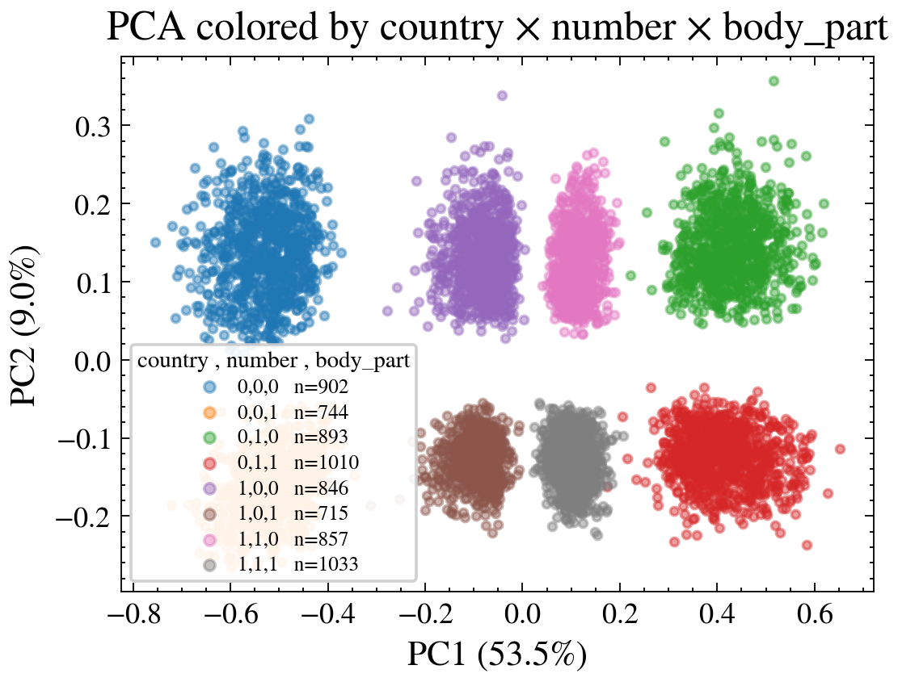
The PC1xPC2 plane colored by the joint value of country x number x body_part: eight clean blobs, one per feature combination.
Finally, for our new model we can even again reproduce a band, as before:
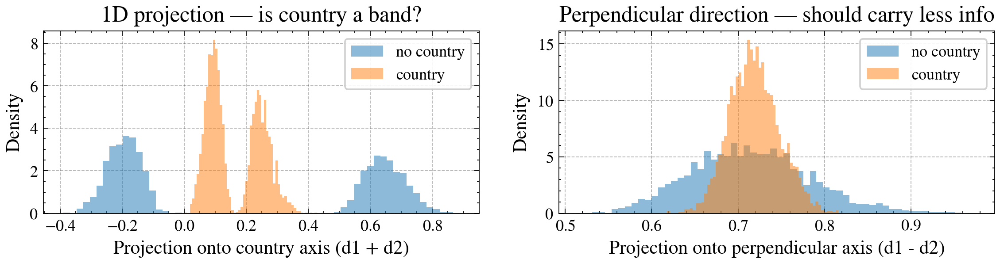
The decorrelation model also shows a country band along its country axis, just like the original network.
This is also nice to see, because in this case the PC1 and the country $\hat{d}_{\parallel}$ directions are quite aligned, with a cosine of (0.90).44 In constrast, the original puzzles has a $\hat{d}_{\parallel}$ cosine alignment of 0.28 for PC1, and 0.63 of PC2. While in the decorrelation model it's almost a clean principal component. This would be interesting to explore penalty effect restarting from scratch.
Conclusion
Trying to understand the original puzzle's mechanism, I found the band geometry is reproducible from a simple decorrelation regularizer. In doing this exercise, it was pretty important to be in control of the AI reasoning, and suggest experiments and hypotheses, otherwise the AI would try to just enter into some loop.
By the end of the day, AI or not, basics and simplicity are what matters. If you focus on the basics, a lot of things follow.
Appendix
The sections below are extended exploration. They are rougher and somewhat out of narrative order. I also include Tasks 3, that was somehow openended, even though I did not actively spent too much time on it.
PCA/t-SNE
A simple PCA can also show corridor structure. This backs up our finding through MLP.
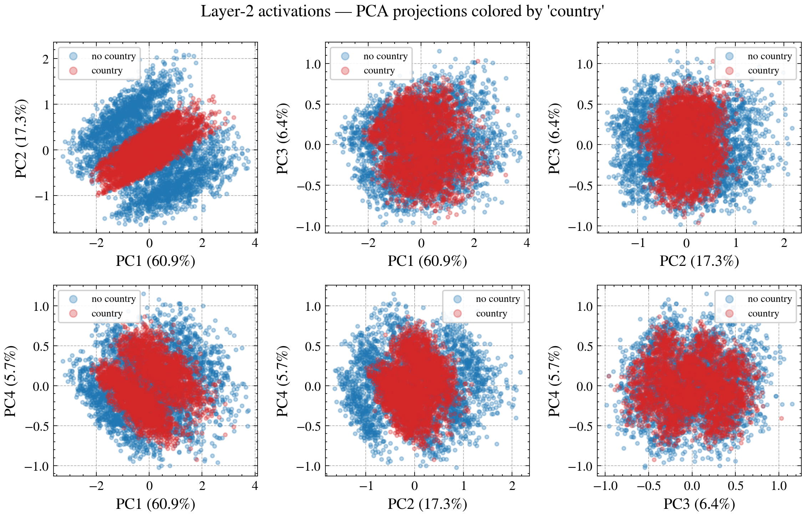
PCA of the original layer-2 activations colored by country, with the explained-variance spectrum. Country concentrates toward the centre while no-country spreads outward.
Explained variance (top 10 PCs):
PC 1: 0.609 ████████████████████████████████████████████████████████████
PC 2: 0.173 █████████████████
PC 3: 0.064 ██████
PC 4: 0.057 █████
PC 5: 0.042 ████
PC 6: 0.032 ███
PC 7: 0.022 ██
PC 8: 0.000
PC 9: 0.000
PC10: 0.000While this is quite an interesting effect, I would like to show how our choice of the country axis allowed us to get cleaner results, better than the variance direction given by PCA.
First, let's plot, in 3D to make it cooler, the activation data in PCA space only:
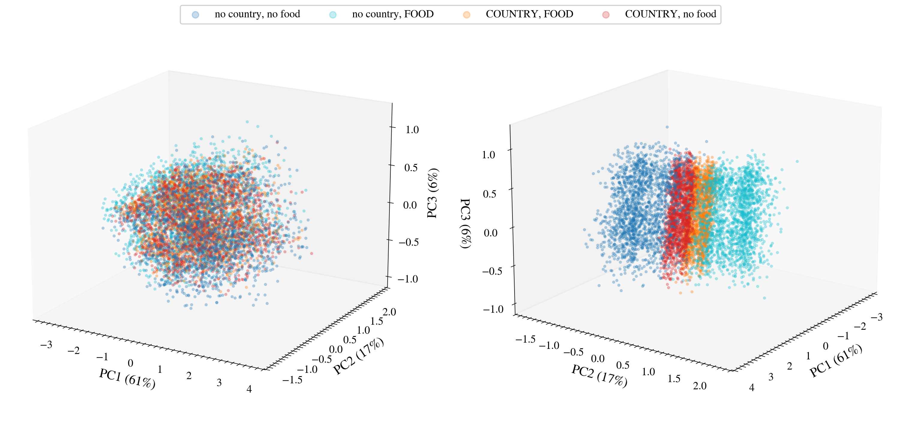
3-D PCA of the layer-2 activations colored by country x food, using the variance-driven principal axes.
Now, let's use our $\hat{d}_{\parallel}$ direction:
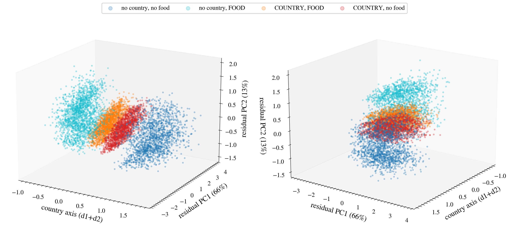
The same points with the country axis pinned as one axis and PCA applied to the rest. The corridor is far cleaner than plain PCA.
It is clear that the second plot is much cleaner with respect to the first. Still, PCA is a valuable tool that would have allowed us a data-based approach.
Other projections histograms
Just to be sure, we also make similar historgrams of projections along other features, to show the significance of the food direction:
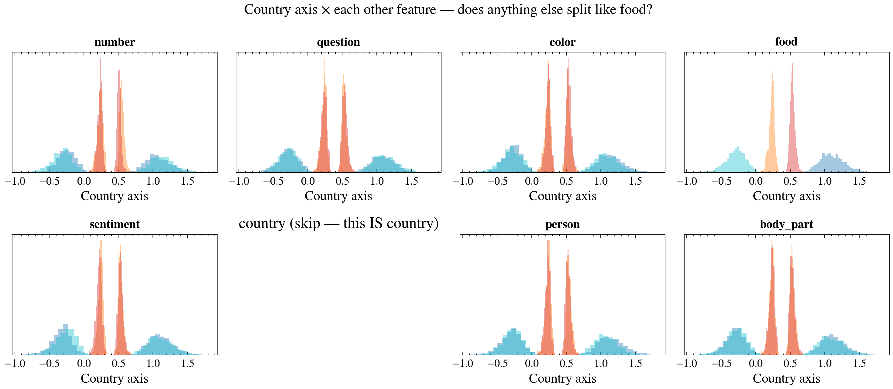
Country-axis projection split by country x feature, one panel per feature. Only food splits the country band into two peaks; every other feature leaves it intact.
More on Task 2
How does the network actually decode the band back into something the output layer can use? Going from layer 2 to layer 3 the linear-probe accuracy for country jumps from 43% back to 96%, so the ReLU between them must be doing the work. Some neurons implement $\mathrm{ReLU}(\mathrm{proj}-\mathrm{lower})$, and others $\mathrm{ReLU}(\mathrm{upper}-\mathrm{proj})$, which together test whether $\mathrm{proj} \in [\mathrm{lower}, \mathrm{upper}]$.
To see this directly, we look at the pre-ReLU activations of layer 3 for individual neurons. We plot the country projection (the food/no-food bisector) on the x-axis against the neuron's pre-ReLU value, with a linear fit and the band boundaries marked. Reading off the zero-crossing of each neuron sorts the decoding neurons into two kinds: lower-bound neurons that fire on the right, and upper-bound neurons that fire on the left.
Top gate neurons (flip sign at band boundaries):| Neuron | Lo flip | Hi flip | Total |
|---|---|---|---|
| 58 | 0.467 | 0.000 | 0.467 |
| 33 | 0.210 | 0.161 | 0.371 |
| 59 | 0.293 | 0.060 | 0.353 |
| 47 | 0.294 | 0.043 | 0.337 |
| 0 | 0.322 | 0.000 | 0.322 |
| 36 | 0.164 | 0.138 | 0.302 |
| 6 | 0.256 | 0.045 | 0.301 |
| 15 | 0.294 | 0.000 | 0.294 |
| 62 | 0.182 | 0.076 | 0.258 |
| 44 | 0.021 | 0.186 | 0.207 |
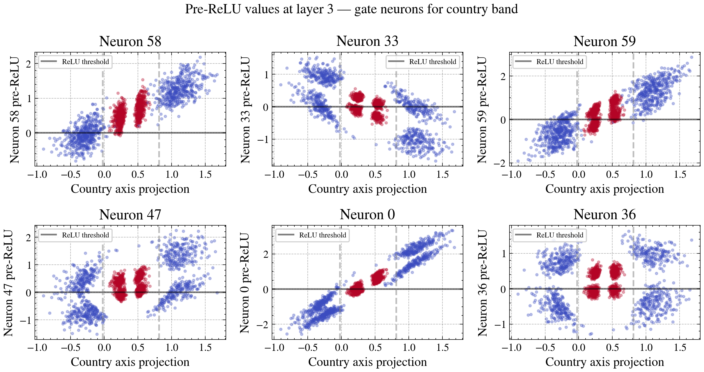
Pre-ReLU value of candidate layer-3 gate neurons versus the country projection, with the band edges marked. Each neuron's zero-crossing is where its ReLU switches on or off.
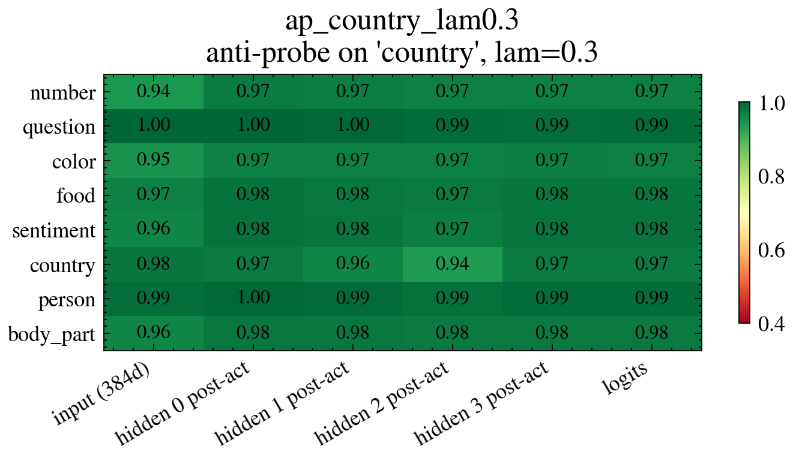
The same gate neurons with a linear fit and zero-crossing. Crossings near the lower edge implement the lower bound; crossings near the upper edge implement the upper bound.
| Neuron | Slope | Intercept | Zero-cross | R² Gate type |
|---|---|---|---|---|
| 58 | 0.94 | 0.20 | -0.214 | 0.798 LOWER gate ≈ 0.0 |
| 33 | -0.73 | 0.27 | 0.372 | 0.444 other (0.37) |
| 59 | 1.40 | -0.24 | 0.170 | 0.769 LOWER gate ≈ 0.0 |
| 47 | 0.63 | 0.01 | -0.012 | 0.258 LOWER gate ≈ 0.0 |
| 0 | 2.21 | -0.54 | 0.246 | 0.918 LOWER gate ≈ 0.0 |
| 36 | 0.11 | 0.15 | -1.432 | 0.010 other (-1.43) |
A good way to confirm these neurons matter is to build a minimal circuit. Using just one LOWER + one UPPER neuron (neurons 56 + 11) gives 92.5% accuracy, so a single pair nearly suffices, and 13 neurons gets 94.8%. From the network's own weights we can approximate:
country ≈ 11.2 − 10.3·(lower neuron) − 10.7·(upper neuron) > 0
Inside the band the gate signal is low, so the positive bias wins and we read country; outside the band we read no country. Putting the whole encode/decode path together:
layer 1 post-ReLU (country linear: 99%)
→ Linear ← layer 2 pre-ReLU
→ ReLU ← this clip creates the band
→ layer 2 post-ReLU (country non-linear: 43%)
→ Linear ← layer 3 pre-ReLU
→ ReLU ← these gates decode the band
→ layer 3 post-ReLU (country linear again: 96%)
More on Task 3
I will explore the hypothesis of training pressure through the loss function (maybe the organizers did something like this). The first thing I tried was picking up the country feature, and playing with some hyperparameters (so, your loss is L= usual_loss(1-\lambda)+\lambda Loss, but generally you can just imagine to regularize with L = Loss+factorOtherLoss).
In this case, you might get something like

Per-layer linear-probe accuracy for an anti-probe-trained model (country, weight 0.3).
Interestingly, with some bottleneck change in the architecture we get multiple failures:
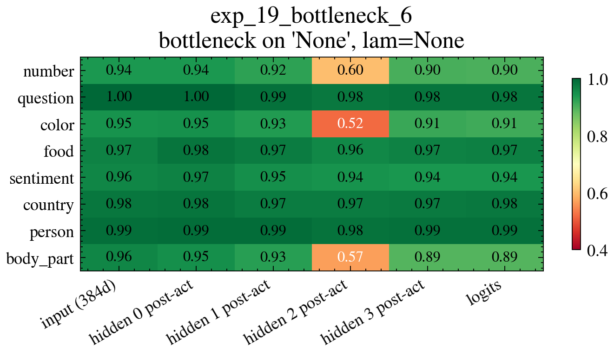
A bottleneck-architecture run: narrowing a layer pushes several features (not just country) off linear decodability at layer 2.
Or here where I just use sigmoid instead of relu:

A model trained with sigmoid activations instead of ReLU.
Something it is clear: no matter what, or we just get green (linear probes work everywhere), or a bunch of orange around (linear probes do not work in many places). We can see that is quite difficult to do!! Perhaps using this anti-probe technique can work. But it could/would require lots of work. And anyway, it was not leading somewhere for now.
So. I asked Gemini Pro to help me a bit. I asked it about adversarial things. And with Claude Code, both LLMs came up with a bunch of things. The main point I had to emphasize is to be sure to have a sure to have a surgical change.
Ok. Tried L1, L2, dropout, SGD, early stopping. Nothing. Either the model collapses entirely (all features at chance) or it trains normally with fully linear encodings. Maybe with more tuning or fuddling around, I would have came up with something. But I wanted a deliberate procedure.
Summary of experiments:
D. Adversarial Methods (38 experiments)
| Method | Best country@L2 | Others intact? | Why it failed |
|---|---|---|---|
| MSE anti-probe (frozen sklearn) | 0.937 | Yes | Probe goes stale every 10 epochs, model wins |
| Creative anti-probe (aggressive) | 0.503 | No (all ~0.57) | Destroys everything |
| GRL (gradient reversal) | 0.951 | Partially | Reversed gradients corrupt all features |
| Alternating anti-probe (per-batch) | 0.982 | Yes | Probe too weak, model wins easily |
E. Auxiliary Losses (42 experiments)
| Method | Best country@L2 | Others intact? | Why it worked/failed |
|---|---|---|---|
| L1 activation sparsity | 0.991 or collapse | No | Binary: nothing or death |
| XOR auxiliary | 0.990 | Yes | XOR head doesn't change the linear geometry |
| Centroid matching | 0.725 | Yes (0.984) | Partial – matching means isn't enough, variance leaks |
| Decorrelation | 0.519 | Yes (0.984) | Directly attacks what linear probes exploit |
Finally, by doing several experiments, something worked!
The decorrelation idea came from Gemini. Decorrelation, my understanding, is that it will not allow a neuron's activation to correlate with the country label.
We modify the loss function as:
$$ \mathcal{L}_{\text{total}} = \mathcal{L}_{\text{task}} + \lambda \sum_{i=1}^{d} \frac{\text{Cov}(a_i, y_c)^2}{\text{Var}(a_i) \text{Var}(y_c)} $$
where $a_i$ is the $i$-th neuron's activation at the chosen layer and $y_c$ is the country label.
It will only attack linear, single-neuron correlation. No individual neuron activation should rise or fall on average with country (basically the correlation rho^2 term in that loss function).
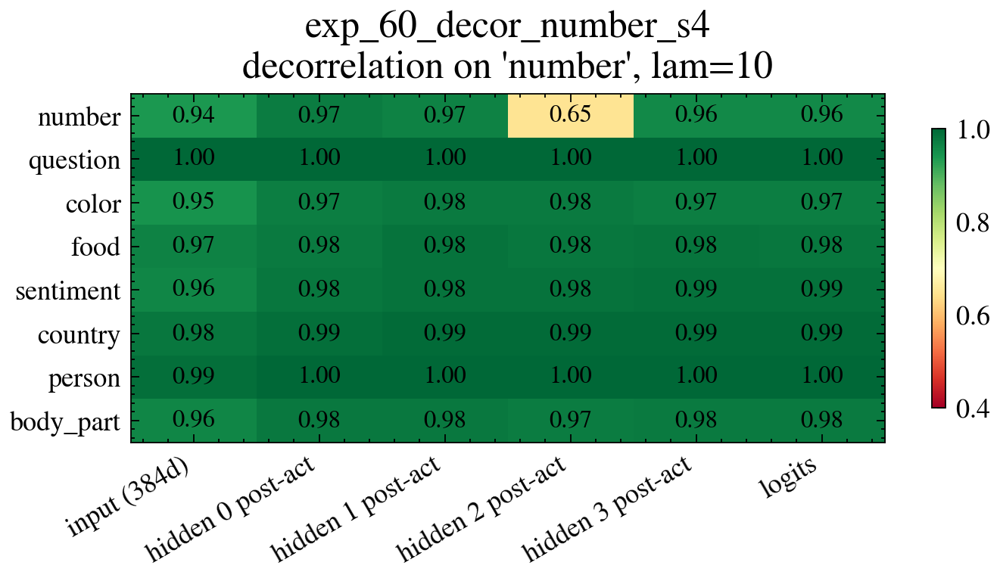
Decorrelation applied to number instead of country: the layer-2 dip now lands on number.
But maybe not too strong:
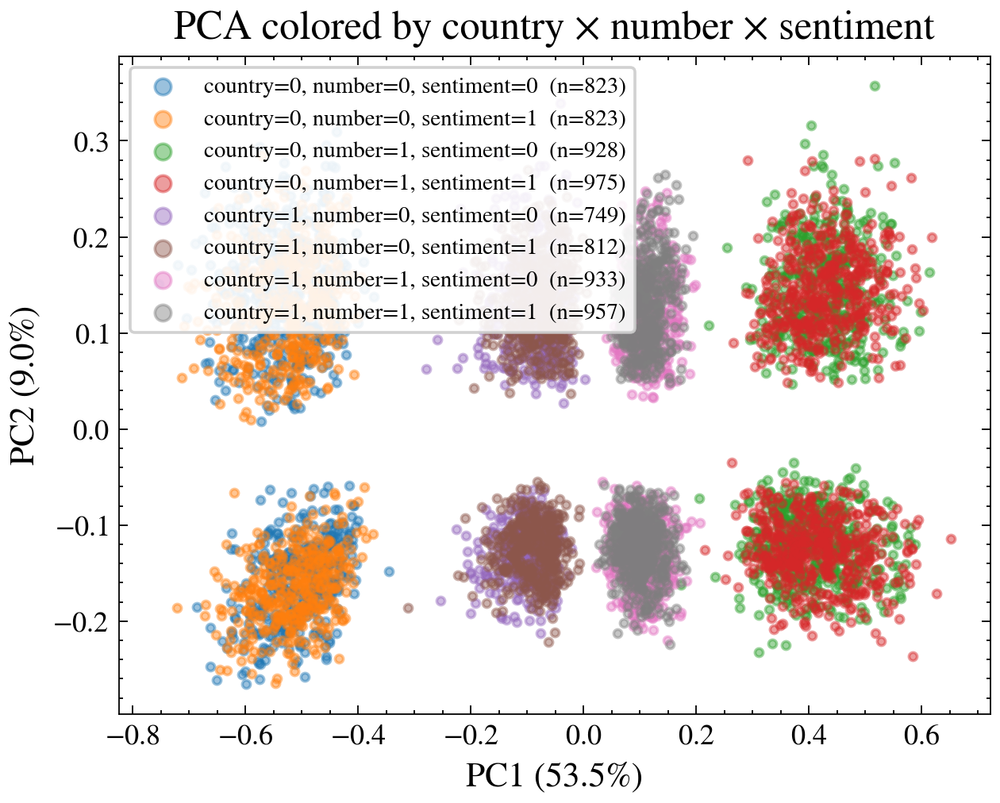
Decorrelation on country with too strong a penalty (lambda=100): country is destroyed everywhere rather than folded into a band.
More plots on decorrelation method ($\lambda = 20$)
In the main text we showed PCA blobs colored by certain features. In constrast, if we use sentiment instead of body_part as in Task 3, we get:
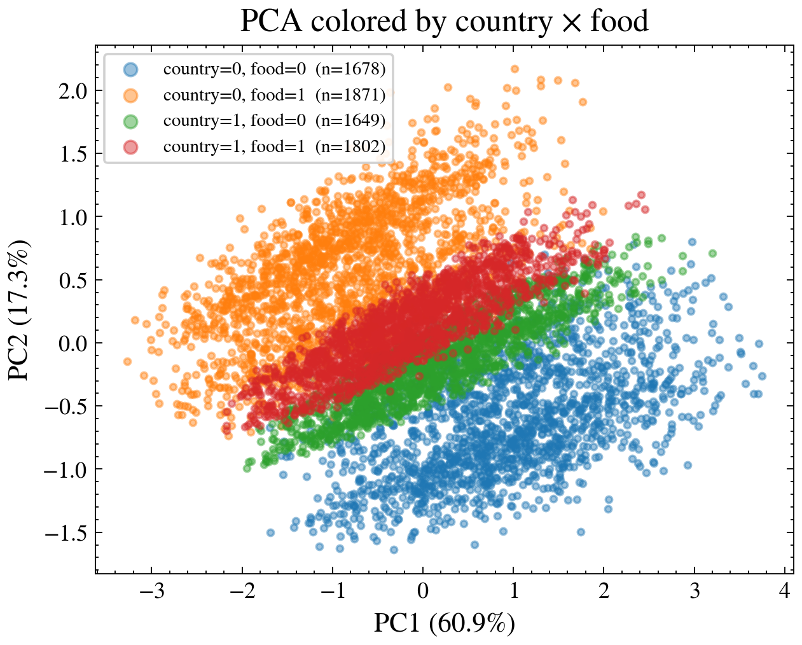
The decorrelation PC1xPC2 plane colored by country x number x sentiment. Sentiment does not organize the blobs (a negative control).
And we can show a similar plot for the original puzzle, just for reference:
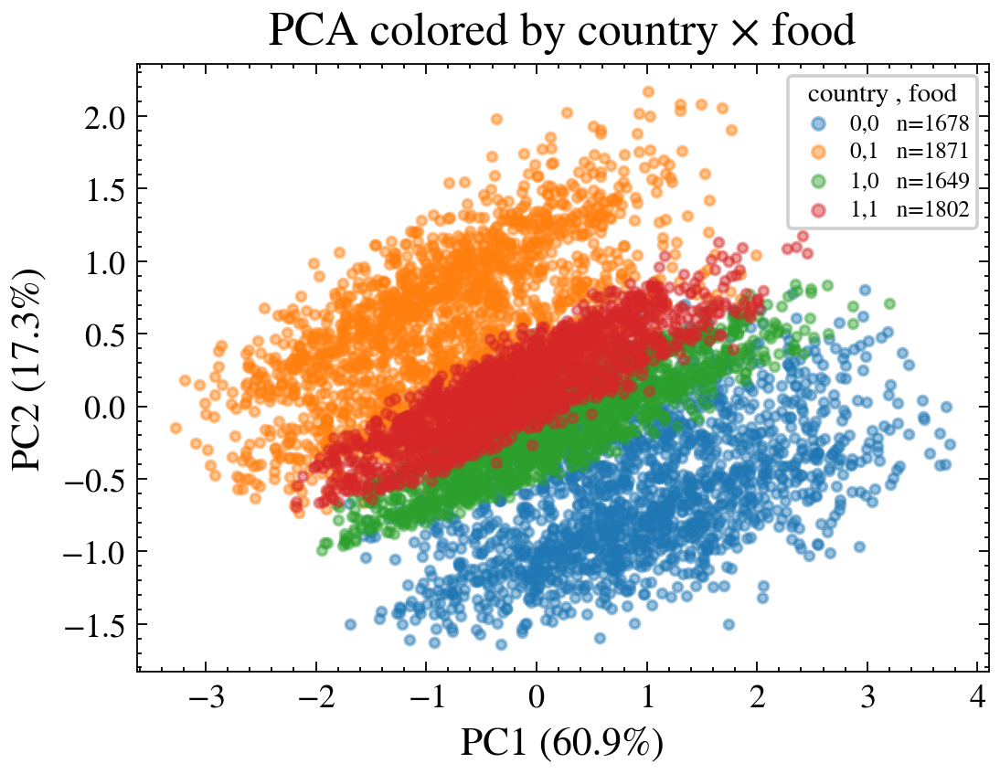
The original puzzle's activations colored by country x food: here the food direction organizes the structure.
Finally, here is the cosine similarity plot:
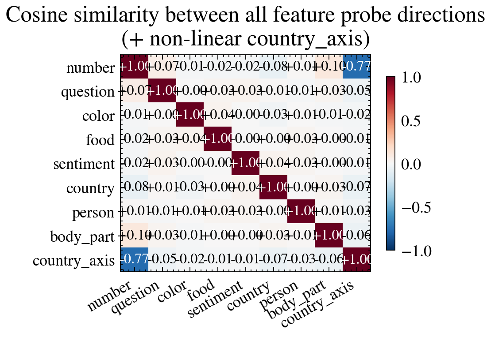
Cosine-similarity matrix for the decorrelation model with its country axis added; the band now aligns with a different feature's direction than in the original.
When you penalize country↔neuron correlation, the model doesn't give up the band, but it moves it onto the number axis instead of food.
I am still not yet sure about how, or which methods allow, to select for a particular set of features on which to park information (I did not spend much time on this item, but it is for future work).
Running with several $\lambda$ values you can get
| model | country still decodable? | host axis (|cos| with band) |
|---|---|---|
| original | yes (0.95) | food (-0.92) strong |
| decor λ=20 | yes (0.97) | number (-0.77) |
| decor λ=50 s1 | yes (0.95) | body_part (+0.23) weak |
| decor λ=50 s3 | yes (0.95) | question (+0.44) |
| decor λ=50 s4 | yes (0.95) | question (+0.54) |
| decor λ=100 / s2 | no (~0.51) | (country destroyed; cosines are noise) |
Hence, with what I did all of this looks like an optimization accident.